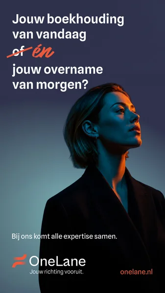
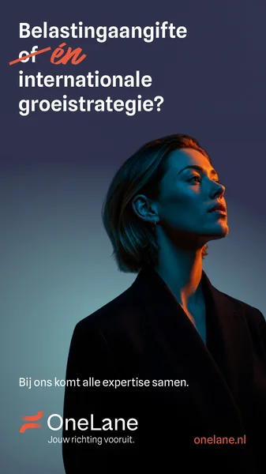
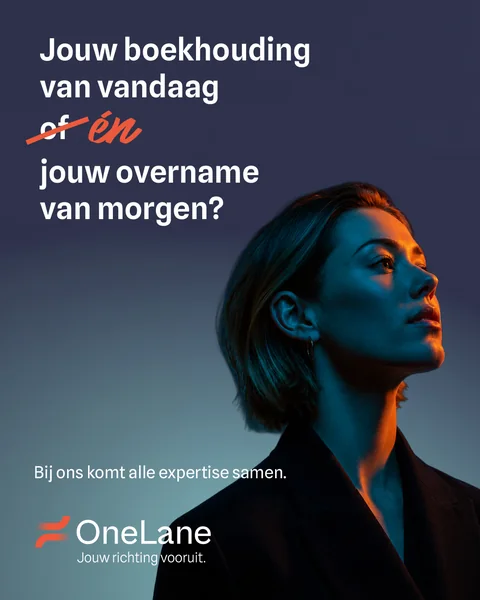
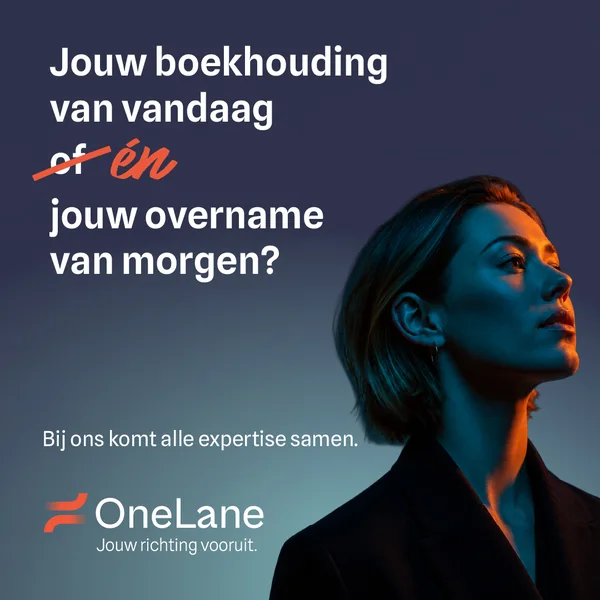
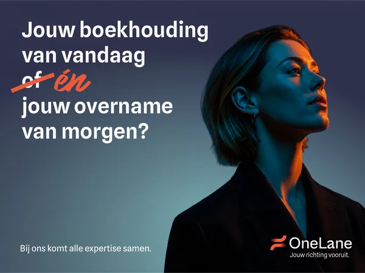
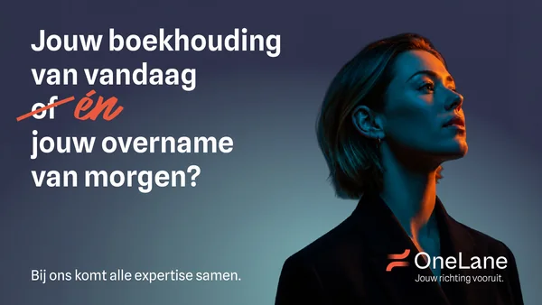

Project · OneLane campagne 2026
Creatives
Opdrachtgever
OneLane
Kanalen
Digital out of home
radio
radio
Uitingen
12
9 beeld, 3 audio
9 beeld, 3 audio
Contact
Sten Bossong
Flii Media
Flii Media
Digital out of home
Abri, versie 1
Belastingaangifte of en


Abri, versie 2
Boekhouding of en overname


Motion, verticaal
10 seconden
Motion, liggend
10 seconden
Snelwegmasten
Mast, staand
Boekhouding of en overname


Mast, vierkant
Boekhouding of en overname


Mast, breed
Boekhouding of en overname


Mast, liggend
Boekhouding of en overname


Mast, motion
6 seconden
Radio
Radiospot 15
15 seconden
Radiospot 20
20 seconden
Radiospot 20, Spotify
20 seconden